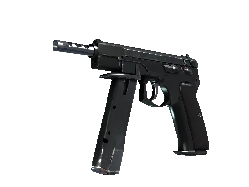

Armas y Utilidades en CS2
Del comportamiento de las armas a la utilidad estratégica: una visión completa
La economía es el eje que determina qué puede comprar cada equipo y condiciona tanto el ritmo como la estrategia de cada ronda.
Dominar el arsenal de CS2 no implica solo saber usar rifles y pistolas: también exige entender cuándo invertir en humos y flashes y cómo cada decisión afecta al plan colectivo. Conocer las categorías, el comportamiento de cada arma y el valor táctico de la utilidad permite aprovechar cada compra y transformar los recursos disponibles en ventaja real dentro del mapa.
Armas en CS2
CS2 ofrece una variedad de armas, concretamente 54. Las armas consisten en 10 pistolas, 11 rifles, 6 armas pesadas y 20 cuchillos (excluyendo los cuchillos por defecto para CT y T). Además de más de 1300 skins diferentes para customizar las armas al gusto de cada uno.
Pistolas
La MP5-SD fue añadida a CS:GO el 15 de agosto de 2018 y es la única SMG silenciada del juego.
CZ75-Auto
$500
Desert Eagle

$700
Dual Berettas

$400
Five-SeveN

$500
Glock-18

$200
P2000

$200
P250

$300
R8 Revolver

$600
USP-S

$200
Rifles
La M4A1-S es el único rifle que se añadió a CS:GO después de su lanzamiento en 2012. La M4A1-S se unió al arsenal el 14 de agosto de 2013 como parte de la actualización Arms Deal.
AK-47

$2700
AUG

$3300
AWP

$4750
FAMAS

$2250
G3SG1

$5000
Galil AR

$2000
M4A1-S

$2900
M4A4

$3100
SCAR-20

$5000
SG 553

$3000
SSG 08

$1700
SMG (subfusil)
El MP5-SD fue añadido a CS:GO el 15 de agosto de 2018 y es el único SMG silenciado en el juego.
MAC-10

$1050
MP5-SD

$1500
MP7

$1700
MP9

$1250
P90

$2350
PP-Bizon

$1400
UMP-45

$1200
Armas Pesadas
La línea de armas pesadas consiste en escopetas y ametralladoras y no ha cambiado desde el lanzamiento de CS:GO en 2012.
MAG-7

$1300
Nova

$1050
Sawed-Off

$1100
XM1014

$2000
M249

$5200
Negev

$1700
Cuchillos
Los cuchillos fueron introducidos por primera vez como un objeto especial raro en la Caja de Armas de CS:GO y consistían en la Bayoneta, Cuchillo Mariposa, Cuchillo Destripador, Karambit y Bayoneta M9.
Todos los cuchillos son de rareza encubierta, presentan un prefijo de estrella (★) y están disponibles en calidad StatTrak.
Bayonet

Bowie Knife

Butterfly Knife

Classic Knife

Falchion Knife

Flip Knife

Gut Knife

Hunstman Knife

Karambit

Kukri Knife

M9 Bayonet

Navaja Knife

Nomad Knife

Paracord Knife

Shadow Daggers

Skeleton Knife

Stiletto Knife

Survival Knife

Talon Knife

Ursus Knife

Otras Armas
Zeus x27

$200
Utilidad táctica (granadas)
En CS2 la utilidad engloba todas las granadas del juego y su propósito es crear ventajas tácticas: controlar espacios, negar visión y ganar tiempo sin disparar.
Tipos de utilidad y su función
 Smokes: bloquean visión y permiten cruces seguros. Base de cualquier ejecución organizada.
Smokes: bloquean visión y permiten cruces seguros. Base de cualquier ejecución organizada. Flashes: generan ventanas de acción para peeks, retakes o pushes con coordinación.
Flashes: generan ventanas de acción para peeks, retakes o pushes con coordinación. Molotov / Incendiaria: cortan rutas, fuerzan posiciones y queman segundos clave.
Molotov / Incendiaria: cortan rutas, fuerzan posiciones y queman segundos clave. HE: castigan posiciones previsibles y sinergizan con molos para limpiar ángulos.
HE: castigan posiciones previsibles y sinergizan con molos para limpiar ángulos. Decoy: útil para fakes, bait y situaciones específicas donde confundir al rival.
Decoy: útil para fakes, bait y situaciones específicas donde confundir al rival.
Uso combinado
- Smoke + flash → entrada limpia con ventaja.
- Molotov + HE → limpiar ángulos estáticos.
- Fake de utilidad → forzar rotaciones sin hacer commit.
- Utilidad defensiva en capas → retrasar al rival hasta que llegue la rotación.
Conceptos tácticos clave
- Lineups consistentes para smokes y flashes.
- Timing preciso: no gastar toda la utilidad en early round.
- Control de choke points mediante humo y fuego.
- Roles que influyen en la utilidad: entry, support, IGL.
Errores comunes
- Gastar utilidad sin propósito o demasiado pronto.
- Overflash al propio equipo.
- Smokes con gaps que regalan visión.
- Molos sin plan que revelan posición.
Economía en CS2
La gestión del dinero decide qué armas y utilidades puedes permitirte cada ronda. Entenderla te ayuda a tomar decisiones que ganan más rondas que la puntería sola.
Tipos de compra
Full eco
Ronda donde no se compra para guardar dinero y preparar un futuro full buy fuerte.
Anti eco
Situación donde el rival está en eco; adaptas tu compra para minimizar riesgos y maximizar ventaja.
Half buy / Semi buy
Compra parcial: pistolas potentes o chaleco para competir sin comprometer el próximo full buy.
Full buy
Equipo completo con rifle, utilidades y protección; máxima capacidad para disputar la ronda.
Force buy
Se gasta todo aun sin dinero suficiente para un full buy, apostando por sorprender.
Como funciona la economía en CS2
La economía en CS2 no tiene nada que ver con el mercado de skins, generalmente se refiere a la gestión del dinero para comprar armas y utilidades de manera estratégica en cada ronda.
Al final de cada ronda los jugadores reciben dinero que pueden utilizar al comienzo de la siguiente ronda. Hay ciertas reglas que definden cuánto dinero ganara cada jugador en cada ronda
- Bajas
- Resultado de la ronda (ganada o perdida)
- Plantar la bomba o desactivarla
Ganar dinero
Bajas
Las bajas generan dinero, pero la recompensa depende del arma usada: algunas otorgan pagos altos (SMGs o escopetas) y otras pagan poco, como los rifles. Esto hace que elegir con qué armas tomar los duelos afecte tanto a tu economía como a la del rival.
- AWP - $100
- Pistolas, rifles de asalto, ametralladoras ligeras y granadas - $300
- SMG excepto P90 ($300) - $600
- Escopetas excepto XM1014 ($600) - $900
- Cuchillo - $1500
Resultado de la ronda
El segundo factor que afecta a la economía es el resultado de la ronda. Ganar una ronda te da dinero, pero perder también otorga recompensas.
- Ganar una ronda te otorga $3250
- Perder una ronda te otorga $1400 para la primera derrota. Para cada ronda perdida consecutivamente, el número incrementa en $500, y esto es conocido como el bonus de racha de derrota. Este bonus tiene un límite máximo en $3400 (4 rondas perdidas seguidas)
- En el lado Terrorista, una victoria con explosión de bomba te otorga $3500
- Mientras que en el lado Anti Terrorista, una desactivación exitosa de la bomba, también te otorga $3500
Por supuesto, este es el 'dinero del equipo'. Tu dinero personal por bajas también se suma a esto.
Bomba plantada o desactivada
El jugador que planta la bomba en la ronda recibe $300 de recompensa. Si la ronda ronda como Terrorista se pierde con la bomba plantada, cada jugador de este bando recibirá $800.
Finalmente, si mueres como Terrorista después de que el contador oficial de la ronda haya terminado, recibirás $0, haciendo que a veces morir antes de que el tiempo acabe sea beneficioso.

Estrategias de economía comunes en CS2
Full eco / eco
Una ronda eco (economía baja) es cuando un equipo decide no gastar dinero en armas y utilidades para ahorrar para futuras rondas. En una full eco tu juegas con la pistola por defecto o como mucho una pistola barata. Por ejemplo, si estás jugando como Terrorista una buena estrategia es intentar plantar la bomba para obtener el bonus de dinero.
Un ejemplo de una buena situación para hacer eco, es después de perder la primera ronda de cada mitad
Half-Buy / Semi-buy
Como el nombre sugiere, esta es la situación que hay entre una eco y una compra completa, esto ocurre cuando tienes dinero, pero no el suficiente para una compra completa de rifles y utilidad con armadura completa. En una Half-buy, las opciones son algunas granadas y armas más baratas como SMG, escopetas o incluso, alguna Galil o FAMAS.
Cuando tu equipo decide hacer una Half-Buy, no debéis gastar todo vuestro dinero ya que es una transición a una Full-buy ya que tenéis algo de dinero pero no el suficiente para esta compra completa.
Full-buy / Compra completa
Esto es para lo que se hacen las eco, una compra completa sirve para poder comprar rifles y utilidades con armadura completa, en el lado CT esto incluye el kit de desactivación.
Force buy
Una force buy es cuando un equipo decide gastar todo su dinero restante en armas y utilidades, incluso si no tienen suficiente para una compra completa. Esto se hace para intentar ganar una ronda crucial o para sorprender al equipo contrario.
Es una estrategia arriesgada que puede cambiar el curso del juego si se ejecuta correctamente. Si esta ronda sale mal la economía del equipo puede verse gravemente afectada.
Anti eco
Esta estrategia es utilizada cuando se prevee que el equipo enemigo hará una eco. Comprando armas que den más bonus por baja como escopetas o SMG aseguras un aumento de la economía de tu equipo.
Decidir hacer una anti eco puede ser peligroso; si tu equipo compra una buena cantidad de SMGs y has calculado mal la economía del equipo enemigo o ellos deciden forzar, podrías perder tu ventaja de armas y la victoria de la ronda podría ser para cualquiera.
Extra tips y consejos
- No comprar cuando tu equipo no tiene suficiente dinero.
- Si eres CT y sabes que el equipo enemigo va full buy, no compres casco ya que un Ak-47 te matará de un tiro a la cabeza igualmente.
- Si rusheas, no compres un set entero de granadas
- Si todo el mundo puede hacer full buy menos 1 persona, el que más dinero tiene debería dropearle arma para que él pueda comprar granadas y armadura.
- No forzar todas las rondas: esto llevará a que tu equipo tenga una economía muy baja y no pueda comprar armas y utilidades en rondas futuras.